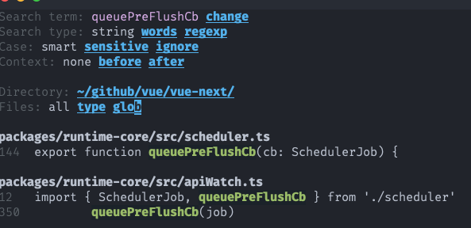
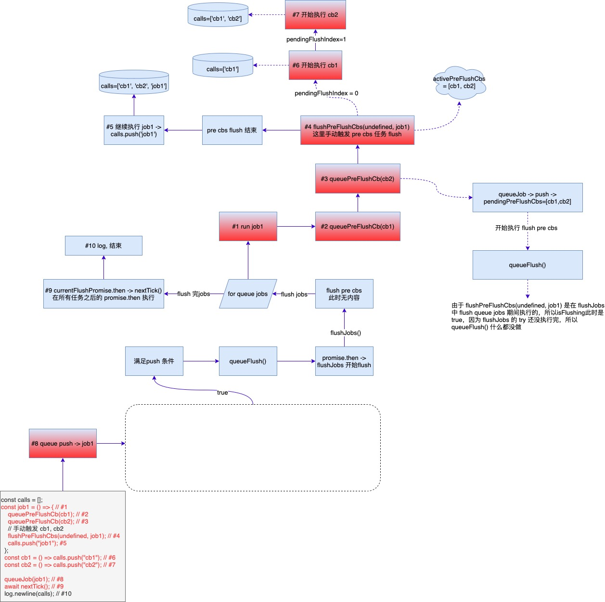
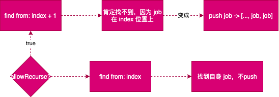

build you own vue scheduler
Table of Contents
Vue3 Scheduler
vue3 中任务调度机制源码分析实现 -> core/scheduler.ts at main · vuejs/core
旧博客中的相关两篇文章：
Vue3 源码头脑风暴之 7 ☞ runtime-core(1) - 若叶知秋
Vue3 功能拆解② Scheduler 渲染机制 - 若叶知秋
这里会用 js 重新实现一遍。
1. 简介
该功能是用来管理 vue-next 中渲染相关的异步任务的(包括节点更新， props 更新等等都 是由这个 scheduler 来管理的。)
这块包含的 api 不多，但却是 vue-next 中 DOM 渲染任务的关键功能。
scheduler 所管理的任务主要分为三种：
- job 普通类型
- post 类型
- pre 类型
2. Global Variables
global variables used.
1: let isFlushing = false 2: let isFlushPending = false 3: 4: const queue = [] 5: let flushIndex = 0 6: 7: const pendingPreFlushCbs = [] 8: let activePreFlushCbs = null 9: let preFlushIndex = 0 10: 11: const pendingPostFlushCbs = [] 12: let activePostFlushCbs = null 13: let postFlushIndex = 0 14: 15: const resolvedPromise = Promise.resolve() 16: let currentFlushPromise = null 17: 18: let currentPreFlushParentJob = null 19: 20: // limit of update recursively 21: const RECURSION_LIMIT = 100 22: 23: const getId = job => job.id == null ? Infinity : job.id 24: 25: function findInsertionIndex(id) { 26: let start = flushIndex + 1 27: let end = queue.length 28: 29: // 二分法找到插入位置 30: while (start < end) { 31: const middle = (start + end) >>> 1 32: const middleJobId = getId(queue[middle]) 33: middleJobId < id ? (start = middle + 1) : (end = middle) 34: } 35: 36: return start 37: } 38: 39: const isArray = Array.isArray 40: const isObject = val => val !== null && typeof val === 'object' 41: const isFunction = val => typeof val === 'function' 42: const isPromise = val => { 43: return isObject(val) && isFunction(val.then) && isFunction(val.catch) 44: } 45: function callWithErrorHandling(fn, instance, type, args) { 46: let res 47: try { 48: res = args ? fn(...args) : fn() 49: } catch (err) { 50: handleError(err, instance, type) 51: } 52: } 53: 54: function callWithAsyncErrorHandling(fn, instance, type, args) { 55: if (typeof fn === 'function') { 56: const res = callWithErrorHandling(fn, instance, type, args) 57: if (res && isPromise(res)) { 58: res.catch(err => { 59: handleError(err, instance, type) 60: }) 61: } 62: return res 63: } 64: 65: const values = [] 66: for (let i = 0; i < fn.length; i++) { 67: values.push(callWithAsyncErrorHandling(fn[i], instance, type, args)) 68: } 69: return values 70: } 71: 72: function handleError(err) { 73: console.log(err) 74: } 75: 76: let debugOn = true 77: const log = (fn, message) => { 78: if (debugOn) { 79: if (message === undefined) { 80: console.log(fn) 81: } else { 82: console.log(`[${fn}] ${message}`) 83: } 84: } 85: } 86: const logEnd = (hint = "END") => console.log(`--------- ${hint} ---------`)
3. APIs
| api | description |
|---|---|
| nextTick() | trigger render next tick |
| queueJob() | - |
| queueFlush() | flush all tasks in job queue |
| queueCb() | task enqueue |
| queuePreFlushCb() | enqueue pre tasks in pre queue |
| queuePostFlushCb() | enqueue post tasks in post queue |
| flushPreFlushCbs() | flush pre task queue |
| flushPostFlushCbs() | flush post task queue |
| flushJobs() | flush all tasks in queue |
| check updates recursively or not |
表中 api 也可看出，主要是围绕一种类型的任务(job,pre,post)相关的任务入列和 flush 操作的函数，下面会循序渐进地去实现它们。
三种类型 api 关系：
- job -> flushIndex -> queue -> queueJob() -> queueFlush() -> flushJobs()
- pre -> preFlushIndex -> pendingPreFlushCbs -> activePreFlushCbs -> queuePreFlushCb() -> flushPreFlushCbs() -> flushJobs()
- post -> postFlushIndex -> pendingPostFlushCbs -> activePostFlushCbs -> -> flushPostFlushCbs() -> flushJobs()
queueJob
1: <<GlobalVars>> 2: 3: <<nextTick>> 4: 5: <<queueJob>> 6: 7: <<queueFlush>> 8: 9: <<flushJobs>>
pre
1: <<GlobalVars>> 2: 3: <<nextTick>> 4: 5: <<queueJob>> 6: 7: <<queueFlush>> 8: 9: <<flushJobs>> 10: 11: <<queueCb>> 12: 13: <<queuePreFlushCb>> 14: 15: <<flushPreFlushCbs>>
post
1: <<GlobalVars>> 2: 3: <<nextTick>> 4: 5: <<queueJob>> 6: 7: <<queueFlush>> 8: 9: <<flushJobs>> 10: 11: <<queueCb>> 12: 13: <<queuePreFlushCb>> 14: 15: <<flushPreFlushCbs>> 16: 17: <<queuePostFlushCb>> 18: 19: <<flushPostFlushCbs>>
scheduler
1: let isFlushing = false 2: let isFlushPending = false 3: 4: const queue = [] 5: let flushIndex = 0 6: 7: const pendingPreFlushCbs = [] 8: let activePreFlushCbs = null 9: let preFlushIndex = 0 10: 11: const pendingPostFlushCbs = [] 12: let activePostFlushCbs = null 13: let postFlushIndex = 0 14: 15: const resolvedPromise = Promise.resolve() 16: let currentFlushPromise = null 17: 18: let currentPreFlushParentJob = null 19: 20: // limit of update recursively 21: const RECURSION_LIMIT = 100 22: 23: const getId = job => job.id == null ? Infinity : job.id 24: 25: function findInsertionIndex(id) { 26: let start = flushIndex + 1 27: let end = queue.length 28: 29: // 二分法找到插入位置 30: while (start < end) { 31: const middle = (start + end) >>> 1 32: const middleJobId = getId(queue[middle]) 33: middleJobId < id ? (start = middle + 1) : (end = middle) 34: } 35: 36: return start 37: } 38: 39: const isArray = Array.isArray 40: const isObject = val => val !== null && typeof val === 'object' 41: const isFunction = val => typeof val === 'function' 42: const isPromise = val => { 43: return isObject(val) && isFunction(val.then) && isFunction(val.catch) 44: } 45: function callWithErrorHandling(fn, instance, type, args) { 46: let res 47: try { 48: res = args ? fn(...args) : fn() 49: } catch (err) { 50: handleError(err, instance, type) 51: } 52: } 53: 54: function callWithAsyncErrorHandling(fn, instance, type, args) { 55: if (typeof fn === 'function') { 56: const res = callWithErrorHandling(fn, instance, type, args) 57: if (res && isPromise(res)) { 58: res.catch(err => { 59: handleError(err, instance, type) 60: }) 61: } 62: return res 63: } 64: 65: const values = [] 66: for (let i = 0; i < fn.length; i++) { 67: values.push(callWithAsyncErrorHandling(fn[i], instance, type, args)) 68: } 69: return values 70: } 71: 72: function handleError(err) { 73: console.log(err) 74: } 75: 76: let debugOn = true 77: const log = (fn, message) => { 78: if (debugOn) { 79: if (message === undefined) { 80: console.log(fn) 81: } else { 82: console.log(`[${fn}] ${message}`) 83: } 84: } 85: } 86: const logEnd = (hint = "END") => console.log(`--------- ${hint} ---------`) 87: 88: function nextTick(fn) { 89: const p = currentFlushPromise || resolvedPromise 90: log(`nextTick| queue=${queue.length},resolvedPromise=${resolvedPromise},currentFlushPromise=${currentFlushPromise}`) 91: return fn ? p.then(this ? fn.bind(this) : fn) : p 92: } 93: 94: function queueJob(job) { 95: log(`queueJob| queue=${queue.length},job existed=${queue.includes(job, flushIndex)}`) 96: if (( 97: !queue.length || 98: !queue.includes(job, isFlushing && job.allowRecurse ? flushIndex + 1 : flushIndex) 99: ) && job !== currentPreFlushParentJob) { 100: // 没有 id 直接追加到后面 101: if (job.id == null) { 102: queue.push(job) 103: } else { 104: // 有 id 要按照顺序插入 105: queue.splice(findInsertionIndex(job.id), 0, job) 106: } 107: 108: // 入列现时启动任务 flush 动作 109: queueFlush() 110: } 111: } 112: 113: function queueFlush() { 114: log(`queueFlush| isFlushing=${isFlushing},isFlushPending=${isFlushPending}`) 115: if (!isFlushing && !isFlushPending) { 116: isFlushPending = true 117: currentFlushPromise = resolvedPromise.then(flushJobs) 118: } 119: } 120: 121: function flushJobs(seen) { 122: // 这个函数里面都是同步操作 123: isFlushPending = false 124: isFlushing = true 125: 126: log(`flushJobs| seen=${seen}, queue=${queue.length},flushIndex=${flushIndex},isFlushing=${isFlushing}`) 127: 128: flushPreFlushCbs(seen) 129: 130: // pre jobs 131: 132: // 在 flush 之前对任务排序，确保： 133: // 1. 组件总从 parent -> child 更新，因为父组件总是会在子组件之前被渲染，因此它的渲染函数应该具备更小优先级 134: // 2. 如果一个组件在父组件更新阶段被卸载了那么它的更新可以直接忽略 135: queue.sort((a, b) => getId(a) - getId(b)) 136: 137: try { 138: for (flushIndex = 0; flushIndex < queue.length; flushIndex++) { 139: const job = queue[flushIndex] 140: if (job && job.active !== false) { 141: callWithErrorHandling(job, null, Error) 142: } 143: } 144: } finally { 145: // 当前任务队列已经清空了 146: flushIndex = 0 147: queue.length = 0 148: 149: // flush post 150: flushPostFlushCbs(seen) 151: 152: isFlushing = false 153: // 一次队列对应一个 flush promise 154: currentFlushPromise = null 155: log(`flushJobs| queue=${queue.length},pendingPreFlushCbs=${pendingPreFlushCbs.length},pendingPostFlushCbs=${pendingPostFlushCbs.length}`) 156: // 在 flush 过程中加入的任务 157: if (queue.length || pendingPreFlushCbs.length || pendingPostFlushCbs.length) { 158: flushJobs(seen) 159: } 160: } 161: } 162: 163: function queueCb(cb, activeQueue, pendingQueue, index) { 164: if (!isArray(cb)) { 165: if (!activeQueue || !activeQueue.includes(cb, cb.allowRecurse ? index + 1 : index)) { 166: pendingQueue.push(cb) 167: } 168: } else { 169: pendingQueue.push(...cb) 170: } 171: queueFlush() 172: } 173: 174: function queuePreFlushCb(cb) { 175: queueCb(cb, activePreFlushCbs, pendingPreFlushCbs, preFlushIndex) 176: } 177: 178: function flushPreFlushCbs(seen, parentJob) { 179: if (pendingPreFlushCbs.length) { 180: currentPreFlushParentJob = parentJob 181: activePreFlushCbs = [...new Set(pendingPreFlushCbs)] 182: // 重置以接纳新的任务 183: pendingPreFlushCbs.length = 0 184: for (preFlushIndex = 0; preFlushIndex < activePreFlushCbs.length; preFlushIndex++) { 185: activePreFlushCbs[preFlushIndex]() 186: } 187: 188: activePreFlushCbs = null 189: preFlushIndex = 0 190: currentPreFlushParentJob = null 191: 192: // 递归直到清空所以 pre 任务 193: flushPreFlushCbs(seen, parentJob) 194: } 195: } 196: 197: function queuePostFlushCb(cb) { 198: queueCb(cb, activePostFlushCbs, pendingPostFlushCbs, postFlushIndex) 199: } 200: 201: function flushPostFlushCbs(seen) { 202: if (pendingPostFlushCbs.length) { 203: const deduped = [...new Set(pendingPostFlushCbs)] 204: pendingPostFlushCbs.length = 0 205: 206: // 已经有了 active queue, flushPostFlushCbs 嵌套使用时 207: if (activePostFlushCbs) { 208: activePostFlushCbs.push(...deduped) 209: return 210: } 211: 212: activePostFlushCbs = deduped 213: 214: activePostFlushCbs.sort((a, b) => getId(a) - getId(b)) 215: 216: for (postFlushIndex = 0; postFlushIndex < activePostFlushCbs.length; postFlushIndex++) { 217: activePostFlushCbs[postFlushIndex]() 218: } 219: 220: activePostFlushCbs = null 221: postFlushIndex = 0 222: } 223: } 224: 225: function invalidateJob(job) { 226: const i = queue.indexOf(job) 227: if (i > flushIndex) { 228: queue.splice(i, 1) 229: } 230: }
4. nextTick(fn)
当前事件队列循环中同步代码执行完之后再去执行 fn 或后面的代码(使用
await nextTick() 时)
在这里是当 queue 所有队列清空之后执行的一个异步操作，与之有重要关联的两个变量：
- resolvedPromise，一个空的 promise then
- currentFlushPromise，当 queue 队列中的所有任务执行完成之后返回的一个 promise 实例，因为 flushJobs() 中 flush 任务时都是同步操作
1: function nextTick(fn) { 2: const p = currentFlushPromise || resolvedPromise 3: log(`nextTick| queue=${queue.length},resolvedPromise=${resolvedPromise},currentFlushPromise=${currentFlushPromise}`) 4: return fn ? p.then(this ? fn.bind(this) : fn) : p 5: }
所以 nextTick(fn) 的 fn 函数或
await nextTick() 后面的代码都会在当前
queue
队列中任务完成之后才会被执行。
Testing...
1: <<GlobalVars>> 2: <<nextTick>> 3: 4: (async function() { 5: log('run first...') 6: nextTick(() => { 7: log('\nrun second...') 8: }) 9: await nextTick() 10: log('\nrun third...') 11: }())
run first... nextTick| queue=0,resolvedPromise=[object Promise],currentFlushPromise=null nextTick| queue=0,resolvedPromise=[object Promise],currentFlushPromise=null undefined run second... run third...
5. queueJob()
任务入列, queueJob() ->
queueFlush() ->
flushJobs() 。
1: function queueJob(job) { 2: log(`queueJob| queue=${queue.length},job existed=${queue.includes(job, flushIndex)}`) 3: if (( 4: !queue.length || 5: !queue.includes(job, isFlushing && job.allowRecurse ? flushIndex + 1 : flushIndex) 6: ) && job !== currentPreFlushParentJob) { 7: // 没有 id 直接追加到后面 8: if (job.id == null) { 9: queue.push(job) 10: } else { 11: // 有 id 要按照顺序插入 12: queue.splice(findInsertionIndex(job.id), 0, job) 13: } 14: 15: // 入列现时启动任务 flush 动作 16: queueFlush() 17: } 18: }
Testing...
GlobalVars, nextTick, queueJob, queueFlush, flushJobs
1: <<GlobalVars>> 2: <<nextTick>> 3: <<queueJob>> 4: <<queueFlush>> 5: <<flushJobs>> 6: 7: (async function() { 8: queueJob(() => { 9: console.log('job 1') 10: }) 11: queueJob(() => { 12: console.log('job 2') 13: }) 14: 15: console.log(`should before flush, queue.length=${queue.length}`) 16: await nextTick() 17: console.log(`should after flush, queue.length=${queue.length}`) 18: }()) 19: return 1
注意看上面15 和 17 两行打印的输出，前者在 flush 之 前就会打印出来因为它同步代码，而后者会在所有 jobs 的 fn 函数执行之后也就是 9 和 12 打印之后打印出来。
这是因为 queueFlush() 中调用
flushJobs() 时候是以
resolvedPromise.then(flushJobs)
方式调用的，也就是说要等 resolvedPromise 状态完
成之后才会触发，而这个 promise 其实是一个
fullfilled 状态的全局 promise 所以它总 会在前一个 queue
flush 动作之后触发(因为
flushJobs() 函数中代码都是同步代码)。
而
currentFlushPromise
这个全局变量是用来记录当前正在执行中的 promise 也就是上面 说的
resolvedPromise.then(flushJobs) 返回的一个
promise，这也是为什么
nextTick()
的代码总是会在当前队列刷新完之后被调用的最终原因，也是为什么在
nextTick() 代码中可以访问真实 DOM
元素的原因，因为当前要执行的 DOM 渲染函数都已经执 行这完成了。
另外， queueJob 支持嵌套调用，即在
queueJob(fn) 的 fn 函数中还可以调用
queueJob 来入列新的任务。
看示例：
1: <<scheduler>> 2: 3: ;(async function() { 4: const calls = [] 5: const job1 = () => { 6: calls.push('job1') 7: 8: // job2 任务会在 job1 执行到这里的时候加入到了 queue 9: // 但是它的执行需等到 queue 中的任务执行完成之后再执行 10: // 因为任务收集是同步的，任务执行是异步的，而 queue flush 操作又是同步的 11: queueJob(job2) 12: } 13: const job2 = () => calls.push('job2') 14: queueJob(job1) 15: await nextTick() 16: 17: log(calls) 18: logEnd() 19: }()) 20: return 0
queueJob| queue=0,job existed=false queueFlush| isFlushing=false,isFlushPending=false nextTick| queue=1,resolvedPromise=[object Promise],currentFlushPromise=[object Promise] 0flushJobs| seen=undefined, queue=1,flushIndex=0,isFlushing=true queueJob| queue=1,job existed=false queueFlush| isFlushing=true,isFlushPending=false flushJobs| queue=0,pendingPreFlushCbs=0,pendingPostFlushCbs=0 [ 'job1', 'job2' ] --------- END ---------
来看一段代码：
1: const nums = [1, 2, 3]; 2: const add = (i) => nums.push(++i); 3: for (let i = 0; i < nums.length; i++) { 4: if (i === 1) add(i); 5: console.log({ i, v: nums[i], l: nums.length }); 6: }
也就是说当在 for 循环中更新被遍历的数组时，是可以被感知到了，因为当在 flushJobs() 中 flush queue 中的 jobs 时，如果有嵌套使用的情况是可以被感知并且会 在当次的 for 循环体系中被执行到。
6. queueFlush()
这个函数的作用是：当用任务入列就启动 flush 动作去刷新队列中的任务。
1: function queueFlush() { 2: log(`queueFlush| isFlushing=${isFlushing},isFlushPending=${isFlushPending}`) 3: if (!isFlushing && !isFlushPending) { 4: isFlushPending = true 5: currentFlushPromise = resolvedPromise.then(flushJobs) 6: } 7: }
7. flushJobs()
三种任务执行的顺序： pre cbs -> jobs -> post cbs 。
1: function flushJobs(seen) { 2: // 这个函数里面都是同步操作 3: isFlushPending = false 4: isFlushing = true 5: 6: log(`flushJobs| seen=${seen}, queue=${queue.length},flushIndex=${flushIndex},isFlushing=${isFlushing}`) 7: 8: flushPreFlushCbs(seen) 9: 10: // pre jobs 11: 12: // 在 flush 之前对任务排序，确保： 13: // 1. 组件总从 parent -> child 更新，因为父组件总是会在子组件之前被渲染，因此它的渲染函数应该具备更小优先级 14: // 2. 如果一个组件在父组件更新阶段被卸载了那么它的更新可以直接忽略 15: queue.sort((a, b) => getId(a) - getId(b)) 16: 17: try { 18: for (flushIndex = 0; flushIndex < queue.length; flushIndex++) { 19: const job = queue[flushIndex] 20: if (job && job.active !== false) { 21: callWithErrorHandling(job, null, Error) 22: } 23: } 24: } finally { 25: // 当前任务队列已经清空了 26: flushIndex = 0 27: queue.length = 0 28: 29: // flush post 30: flushPostFlushCbs(seen) 31: 32: isFlushing = false 33: // 一次队列对应一个 flush promise 34: currentFlushPromise = null 35: log(`flushJobs| queue=${queue.length},pendingPreFlushCbs=${pendingPreFlushCbs.length},pendingPostFlushCbs=${pendingPostFlushCbs.length}`) 36: // 在 flush 过程中加入的任务 37: if (queue.length || pendingPreFlushCbs.length || pendingPostFlushCbs.length) { 38: flushJobs(seen) 39: } 40: } 41: }
增加 pre cbs flush 代码。
function flushJobs(seen) { // 这个函数里面都是同步操作 isFlushPending = false isFlushing = true log(`flushJobs| seen=${seen}, queue=${queue.length},flushIndex=${flushIndex},isFlushing=${isFlushing}`) + flushPreFlushCbs(seen) // 在 flush 之前对任务排序，确保： // 1. 组件总从 parent -> child 更新，因为父组件总是会在子组件之前被渲染，因此它的渲染函数应该具备更小优先级 // 2. 如果一个组件在父组件更新阶段被卸载了那么它的更新可以直接忽略 queue.sort((a, b) => getId(a) - getId(b)) try { for (flushIndex = 0; flushIndex < queue.length; flushIndex++) { const job = queue[flushIndex] if (job && job.active !== false) { callWithErrorHandling(job, null, Error) } } } finally { // 当前任务队列已经清空了 flushIndex = 0 queue.length = 0 // flush post isFlushing = false // 一次队列对应一个 flush promise currentFlushPromise = null log(`flushJobs| queue=${queue.length},pendingPreFlushCbs=${pendingPreFlushCbs.length},pendingPostFlushCbs=${pendingPostFlushCbs.length}`) // 在 flush 过程中加入的任务 if (queue.length || pendingPreFlushCbs.length || pendingPostFlushCbs.length) { flushJobs(seen) } } }
增加 post cbs flush 代码。
function flushJobs(seen) { // 这个函数里面都是同步操作 isFlushPending = false isFlushing = true log(`flushJobs| seen=${seen}, queue=${queue.length},flushIndex=${flushIndex},isFlushing=${isFlushing}`) flushPreFlushCbs(seen) // pre jobs // 在 flush 之前对任务排序，确保： // 1. 组件总从 parent -> child 更新，因为父组件总是会在子组件之前被渲染，因此它的渲染函数应该具备更小优先级 // 2. 如果一个组件在父组件更新阶段被卸载了那么它的更新可以直接忽略 queue.sort((a, b) => getId(a) - getId(b)) try { for (flushIndex = 0; flushIndex < queue.length; flushIndex++) { const job = queue[flushIndex] if (job && job.active !== false) { callWithErrorHandling(job, null, Error) } } } finally { // 当前任务队列已经清空了 flushIndex = 0 queue.length = 0 // flush post + flushPostFlushCbs(seen) isFlushing = false // 一次队列对应一个 flush promise currentFlushPromise = null log(`flushJobs| queue=${queue.length},pendingPreFlushCbs=${pendingPreFlushCbs.length},pendingPostFlushCbs=${pendingPostFlushCbs.length}`) // 在 flush 过程中加入的任务 if (queue.length || pendingPreFlushCbs.length || pendingPostFlushCbs.length) { flushJobs(seen) } } }
8. queueCb()
这个函数主要是用来对 pre 和 post 类型的 cb 入列函数。
对比 queueCb 和
queueJob
会发现两者没多大的差别，先同步收集再异步 flush(queueFlush()
->
flushJobs)，两者判断条件有细微差别，另外
queueJob 支持数组 形式的 cb：
1: function queueCb(cb, activeQueue, pendingQueue, index) { 2: if (!isArray(cb)) { 3: if (!activeQueue || !activeQueue.includes(cb, cb.allowRecurse ? index + 1 : index)) { 4: pendingQueue.push(cb) 5: } 6: } else { 7: pendingQueue.push(...cb) 8: } 9: queueFlush() 10: }
9. queuePreFlushCb()
1: function queuePreFlushCb(cb) { 2: queueCb(cb, activePreFlushCbs, pendingPreFlushCbs, preFlushIndex) 3: }
10. flushPreFlushCbs()
1: function flushPreFlushCbs(seen, parentJob) { 2: if (pendingPreFlushCbs.length) { 3: currentPreFlushParentJob = parentJob 4: activePreFlushCbs = [...new Set(pendingPreFlushCbs)] 5: // 重置以接纳新的任务 6: pendingPreFlushCbs.length = 0 7: for (preFlushIndex = 0; preFlushIndex < activePreFlushCbs.length; preFlushIndex++) { 8: activePreFlushCbs[preFlushIndex]() 9: } 10: 11: activePreFlushCbs = null 12: preFlushIndex = 0 13: currentPreFlushParentJob = null 14: 15: // 递归直到清空所以 pre 任务 16: flushPreFlushCbs(seen, parentJob) 17: } 18: }
与 pre cbs 有关的:
preFlushIndex -> pendingPreFlushCbs -> activePreFlushCbs -> queuePreFlushCb() -> flushPreFlushCbs() -> flushJobs()
activePreFlushCbs 和 pendingPreFlushCbs 的关系： 前者是后者的一个拷贝， 拷贝完会 立即清空 pending, 目的是为了让 pending 在 active flushing 期间能继续收集新的任务， 这样如果在执行期间有新的任务入列，那么在函数最后的递归操作会对这些新入列的任务继 续 flush 掉，直到再也没有新的任务入列为止。
当 queuePreFlushCb 在
queueJob 中使用时不会主动触发 cbs
执行，如果 需要立即执行 这些 cbs 需要手动调用
flushPreFlushCbs(seen, parentJob) 去刷掉
pre cbs 任务，或 者等到当前 job 执行完了下一个
flushJobs() 调用中执行，因为
queueJob() 执行期间
isFlushing = true ，而在
queueFlush() 中有检测这个值，
如果正在执行 flushing 是 不会继续执行的。
用途： 通过全局搜索 queuePreFlushCb 只有在 core/apiWatch.ts at main · vuejs/core watch 中被调用，且默认就是 pre 类型。

1: // default: 'pre' 2: function doWatch( 3: source: WatchSource | WatchSource[] | WatchEffect | object, 4: cb: WatchCallback | null, 5: { immediate, deep, flush, onTrack, onTrigger }: WatchOptions = EMPTY_OBJ, 6: instance = currentInstance 7: ): WatchStopHandle { 8: // ... 9: let scheduler: ReactiveEffectOptions["scheduler"]; 10: if (flush === "sync") { 11: // ... 12: } else if (flush === "post") { 13: // ... 14: } else { 15: // default: 'pre' 16: scheduler = () => { 17: if (!instance || instance.isMounted) { 18: queuePreFlushCb(job); 19: } else { 20: // with 'pre' option, the first call must happen before 21: // the component is mounted so it is called synchronously. 22: job(); 23: } 24: }; 25: } 26: // ... 27: }
Testing
1: // 源文件：/js/vue/lib.js 2: <<scheduler>> 3: 4: ;(async function() { 5: const calls = []; 6: const job1 = () => { 7: queuePreFlushCb(cb1); 8: queuePreFlushCb(cb2); 9: // 手动触发 cb1, cb2 10: flushPreFlushCbs(undefined, job1); 11: calls.push("job1"); 12: }; 13: const cb1 = () => calls.push("cb1"); 14: const cb2 = () => calls.push("cb2"); 15: 16: queueJob(job1); 17: await nextTick(); 18: log(calls); 19: }());
queueJob| queue=0,job existed=false queueFlush| isFlushing=false,isFlushPending=false nextTick| queue=1,resolvedPromise=[object Promise],currentFlushPromise=[object Promise] undefinedflushJobs| seen=undefined, queue=1,flushIndex=0,isFlushing=true queueFlush| isFlushing=true,isFlushPending=false queueFlush| isFlushing=true,isFlushPending=false flushJobs| queue=0,pendingPreFlushCbs=0,pendingPostFlushCbs=0 [ 'cb1', 'cb2', 'job1' ]

文字分析：
16
先执行， queueJob -> push job1 ->
queue:[job1] -> queueFlush() 在
queueFlush() 中调用
resolvedPromise.then(flushJobs) 异步执行
flushJobs() 函数刷掉所有任务(pre/job/post)
并且记录当前 tick 下的 promise: currentFlushPromise
此时的
pendingPreFlushCbs[] 中是没有任何任务的，所以继续执行
try{…} 开始 flush queue[] jobs，这个时候 flushIndex = 0 得到
job1，开始按顺序执行 job1
6 开始执行
7
将 cb1 push -> pendingPreFlushCbs=[cb1]
8
将 cb2 push -> pendingPreFlushCbs=[cb1, cb2]
10 手动 flush pre cbs
在 flushPreFlushCbs(undefined, job1) 中会记录
currentPreFlushParentJob = job1 这 个变量将会在
queueJob(job) 中用来检测 job 是不是当前的 job1
如果是就不允许 push， 因为 job1
下有子任务正在执行，必须等这些子任务(cb1, cb2) 执行完。
13 开始执行， push ’cb1’ -> calls: [’cb1’]
14 开始执行， push ’cb2’ -> calls: [’cb1’, ’cb2’]
10 开始执行， push ’job1’ -> alls: [’cb1’, ’cb2’, ’job1’]
17
开始执行，因为 nextTick()
1: export function nextTick( 2: this: ComponentPublicInstance | void, 3: fn?: () => void 4: ): Promise<void> { 5: const p = currentFlushPromise || resolvedPromise; 6: return fn ? p.then(this ? fn.bind(this) : fn) : p; 7: }
这里的 await 会等 job1 queueFlush() 触发的
promise.then(flushJobs) 返回的 promise
完成之后再执行后面的代码。
18 log 输出 ’cb1,cb2,job1’
11. queuePostFlushCb()
1: function queuePostFlushCb(cb) { 2: queueCb(cb, activePostFlushCbs, pendingPostFlushCbs, postFlushIndex) 3: }
12. flushPostFlushCbs()
1: function flushPostFlushCbs(seen) { 2: if (pendingPostFlushCbs.length) { 3: const deduped = [...new Set(pendingPostFlushCbs)] 4: pendingPostFlushCbs.length = 0 5: 6: // 已经有了 active queue, flushPostFlushCbs 嵌套使用时 7: if (activePostFlushCbs) { 8: activePostFlushCbs.push(...deduped) 9: return 10: } 11: 12: activePostFlushCbs = deduped 13: 14: activePostFlushCbs.sort((a, b) => getId(a) - getId(b)) 15: 16: for (postFlushIndex = 0; postFlushIndex < activePostFlushCbs.length; postFlushIndex++) { 17: activePostFlushCbs[postFlushIndex]() 18: } 19: 20: activePostFlushCbs = null 21: postFlushIndex = 0 22: } 23: }
和 pre cb 的处理有两个不同点：
-
非回调形式处理 flushing 期间接受到的新任务，而是通过改变执行器
activePostFlushCbs来实现(和 queue job 类似) - 没有递归回调形式处理后续的新任务，参考 1
1: // 源文件：/js/vue/lib.js 2: <<scheduler>> 3: 4: // len = activePostFlushCbs.length 5: const run = async () => { 6: const calls = []; 7: const cb1 = () => { 8: calls.push("cb1"); 9: // 会在同一个 tick 期间执行，因为它在for flushing 期间改变了 10: // activePostFlushCbs，并且紧随 cb1,cb2,cb3 之后执行 11: queuePostFlushCb(cb4); 12: }; 13: const cb2 = () => calls.push("cb2"); 14: const cb3 = () => calls.push("cb3"); 15: // job1 会在 cb4 之后执行，因为 flushJobs 在按顺序执行完 16: // pre -> job -> post 最后的 finally 里面对 queue 进行了检测 17: // 此时 queue = [job1] 随意会递归调用 flushJobs() 继续刷 18: // 但是为什么 cb5 会在 job1 之后呢？？？ 19: // 因为 queuePostFlushCb push 的是 pendingPostFlushCbs 而不是 20: // activePostFlushCbs，所以在 queuePostFlushCb 中调用自身增加的新 21: // cbs 会在 finally 后面的检测递归 flushJobs() 调用中执行 22: // 而 post 的优先级又低于 job 所以 job1 会优先输出 23: const cb4 = () => (queuePostFlushCb(cb5), queueJob(job1), calls.push("cb4")); 24: // 会在 job1,cb5 之后执行 25: const job1 = () => (queuePostFlushCb(cb6), calls.push("job1")); 26: const cb5 = () => calls.push("cb5"); 27: const cb6 = () => calls.push("cb6"); 28: 29: queuePostFlushCb([cb1, cb2]); 30: queuePostFlushCb(cb3); 31: 32: // 应该去重 33: queuePostFlushCb([cb1, cb3]); 34: queuePostFlushCb(cb2); 35: await nextTick(); 36: log(calls); 37: }; 38: run();
queueFlush| isFlushing=false,isFlushPending=false queueFlush| isFlushing=false,isFlushPending=true queueFlush| isFlushing=false,isFlushPending=true queueFlush| isFlushing=false,isFlushPending=true nextTick| queue=0,resolvedPromise=[object Promise],currentFlushPromise=[object Promise] undefinedflushJobs| seen=undefined, queue=0,flushIndex=0,isFlushing=true queueFlush| isFlushing=true,isFlushPending=false flushJobs| queue=0,pendingPreFlushCbs=0,pendingPostFlushCbs=1 flushJobs| seen=undefined, queue=0,flushIndex=0,isFlushing=true queueFlush| isFlushing=true,isFlushPending=false queueJob| queue=0,job existed=false queueFlush| isFlushing=true,isFlushPending=false flushJobs| queue=1,pendingPreFlushCbs=0,pendingPostFlushCbs=1 flushJobs| seen=undefined, queue=1,flushIndex=0,isFlushing=true queueFlush| isFlushing=true,isFlushPending=false flushJobs| queue=0,pendingPreFlushCbs=0,pendingPostFlushCbs=0 [ 'cb1', 'cb2', 'cb3', 'cb4', 'job1', 'cb5', 'cb6' ]
对于 queuePostFlushCb() 和
queueJob() 的混用只要记住一点，
queuePostFlushCb() 不会触 发
activePostFlushCbs 改变，因为 isFlushing =
true，所以只会在当前
flushJobs()
执行到最后递归检测的时候才会进入下一次的 post+job 调用。
13. invalidateJob()
1: function invalidateJob(job) { 2: const i = queue.indexOf(job) 3: if (i > flushIndex) { 4: queue.splice(i, 1) 5: } 6: }
Testing
1: <<scheduler>> 2: 3: const run = async () => { 4: const calls = []; 5: const job1 = () => { 6: calls.push("job1"); 7: invalidateJob(job2); // 这里将 job2 从 queue[] 中删除了 8: }; 9: const job2 = () => { 10: calls.push("job2"); 11: }; 12: const job3 = () => { 13: calls.push("job3"); 14: }; 15: const job4 = () => { 16: calls.push("job4"); 17: }; 18: 19: queueJob(job1); 20: queueJob(job2); 21: queueJob(job3); 22: queuePostFlushCb(job4); 23: await nextTick(); 24: log(calls); 25: }; 26: run();
queueJob| queue=0,job existed=false queueFlush| isFlushing=false,isFlushPending=false queueJob| queue=1,job existed=false queueFlush| isFlushing=false,isFlushPending=true queueJob| queue=2,job existed=false queueFlush| isFlushing=false,isFlushPending=true queueFlush| isFlushing=false,isFlushPending=true nextTick| queue=3,resolvedPromise=[object Promise],currentFlushPromise=[object Promise] undefinedflushJobs| seen=undefined, queue=3,flushIndex=0,isFlushing=true flushJobs| queue=0,pendingPreFlushCbs=0,pendingPostFlushCbs=0 [ 'job1', 'job3', 'job4' ]
14. allowRecurse
这个选项是用来控制是不是可以在 job fn 里面递归调用
queueJob(job) 。
在源码里这个选项出现在两个地方，一个是 queueCb() 中，另一个是 queueJob() 作用都是在检查当前入列的 job 是不是已经在队列里了，控制查找的起始索引 位置。
queueJob:
!queue.includes(job, isFlushing && job.allowRecurse ?
flushIndex + 1 : flushIndex)
queueCb:
!activeQueue.includes(cb, cb.allowRecurse ? index + 1 :
index)

在递归调用时， index 索引上的任务是当前正在被遍历到的 job ，也是递归源，如果从这 里开始找被嵌套的 job 永远进不了队列中。
Testing
1: <<scheduler>> 2: const run = async () => { 3: let count = 0; 4: const job = () => { 5: if (count < 3) { 6: count++; 7: queueJob(job); 8: } 9: }; 10: queueJob(job); 11: queueJob(job); 12: await nextTick(); 13: log("before count: " + count); 14: // 设置 allowRecurse = true 允许自我调度 15: count = 0; 16: job.allowRecurse = true; 17: // 重复入列同一个任务会在 push 阶段就检测和自身递归调用不同 18: queueJob(job); 19: queueJob(job); 20: await nextTick(); 21: log("after count: " + count); 22: }; 23: run(); 24: return 0
queueJob| queue=0,job existed=false queueFlush| isFlushing=false,isFlushPending=false queueJob| queue=1,job existed=true nextTick| queue=1,resolvedPromise=[object Promise],currentFlushPromise=[object Promise] 0flushJobs| seen=undefined, queue=1,flushIndex=0,isFlushing=true queueJob| queue=1,job existed=true flushJobs| queue=0,pendingPreFlushCbs=0,pendingPostFlushCbs=0 before count: 1 queueJob| queue=0,job existed=false queueFlush| isFlushing=false,isFlushPending=false queueJob| queue=1,job existed=true nextTick| queue=1,resolvedPromise=[object Promise],currentFlushPromise=[object Promise] flushJobs| seen=undefined, queue=1,flushIndex=0,isFlushing=true queueJob| queue=1,job existed=true queueFlush| isFlushing=true,isFlushPending=false queueJob| queue=2,job existed=true queueFlush| isFlushing=true,isFlushPending=false queueJob| queue=3,job existed=true queueFlush| isFlushing=true,isFlushPending=false flushJobs| queue=0,pendingPreFlushCbs=0,pendingPostFlushCbs=0 after count: 3
15. Testing
nested
1: // 源文件：/js/vue/lib.js 2: <<scheduler>> 3: 4: const run = async () => { 5: const calls = []; 6: const cb1 = () => { 7: calls.push("cb1"); 8: }; 9: const cb2 = () => { 10: calls.push("cb2"); 11: // queueJob 和 queuePreFlushCb 结合使用 12: queueJob(job1); 13: }; 14: const cb3 = () => { 15: calls.push("cb3"); 16: // 链式使用，cb4 会在 cb1,2,3 执行完成之后才会执行 17: queuePreFlushCb(cb4); 18: }; 19: const cb4 = () => { 20: calls.push("cb4"); 21: }; 22: const cb5 = () => { 23: calls.push("cb5"); 24: }; 25: const job1 = () => { 26: calls.push("job1"); 27: // queuePreFlushCb 在 queueJob 中调用 28: // pre cbs 在 job 中调用的时候不会被执行，除非在这后面手动 flush 29: // 或者有新的任务进来，发起 flushJobs 调用才会执行 30: queuePreFlushCb(cb5); 31: // 必须手动触发, 这样 cb5 才会输出 32: flushPreFlushCbs(undefined, job1 /* currentPreFlushParentJob */); 33: }; 34: const cb6 = () => { 35: calls.push("cb6"); 36: }; 37: 38: queuePreFlushCb(cb1); 39: queuePreFlushCb(cb2); 40: queuePreFlushCb(cb1); 41: queuePreFlushCb(cb2); 42: queuePreFlushCb(cb3); 43: 44: await nextTick(); 45: log("\n" + calls); 46: }; 47: run();
queueFlush| isFlushing=false,isFlushPending=false queueFlush| isFlushing=false,isFlushPending=true queueFlush| isFlushing=false,isFlushPending=true queueFlush| isFlushing=false,isFlushPending=true queueFlush| isFlushing=false,isFlushPending=true nextTick| queue=0,resolvedPromise=[object Promise],currentFlushPromise=[object Promise] undefinedflushJobs| seen=undefined, queue=0,flushIndex=0,isFlushing=true queueJob| queue=0,job existed=false queueFlush| isFlushing=true,isFlushPending=false queueFlush| isFlushing=true,isFlushPending=false queueFlush| isFlushing=true,isFlushPending=false flushJobs| queue=0,pendingPreFlushCbs=0,pendingPostFlushCbs=0 cb1,cb2,cb3,cb4,job1,cb5
结果分析：
-
pendingPreFlushCbs虽然是个数组，但是 flush 期间通过[...new Set(pendingPreFlushCbs)]进行了去重操作。 -
链式操作，因为在执行期间使用的是
activePreFlushCbs且此时的pendingPreFlushCbs清空了，等待新任务入列 -
在执行 cb3 期间，调用 queuePreFlushCb(cb4) 此时 push cb4 ->
pendingPreFlushCbs，但实际不会影响本次的 for 循环执行，这点和 queueJob 有点 不同，它直接使用的是 queue -> for 所以有新的任务入列会立即改变 for 的执行长度 (queue.length)pre 处理会等到
activePreFlushCbsfor 执行循环结束后，在函数的最后递归调用 flushPreFlushCbs() 来刷掉新入列的任务(如： cb4) -
queueJob() 在 queuePreFlushCb() 中调用的时候， queue job 总是在 pre cb 之后被执行， 这也 是 flushJobs() 中处理代码应体现出的结果。
1: function flushJobs() { 2: /// 1. flush pre -> flushPreFlushCbs() 3: /// 2. for -> queue job -> callWithErrorHandling(job, ...) 4: // 3. flush post -> flushPostFlushCbs() 5: }
并且如上面实例结果 cb4 嵌套在 cb3 ，job1 嵌套在了 cb2 中，但是最后还是 cb4 先 得到执行了，job1 再执行。
因此，对于 pre cbs 和 queue jobs 两个类型的任务，不管什么时机入列的，都会 是 先执行 pre cbs 再执行 queue jobs。
-
queuePreFlushCb() 在 queueJob() 中调用的时候，新的 pre job 会在 queue job 后 执行
原因：
flushPreFlushCbs()先于 queue jobs 执行，因此 queue jobs(job1) 执 行的时候queuePreFlushCb()加入的任务(cb5)此时不会执行，而是等 queue jobs 都 执行完之后在 finally 里面会做一次检测1: if (queue.length || pendingPreFlushCbs.length) { 2: flushJobs(seen) 3: }
这个时候会去递归
flushJobs()此时才发现有新的pendingPreFlushCbs(如： cb5)， 则将执行他们，所以结果是 job1,cb5 。
sort-by-id
1: <<scheduler>> 2: 3: const run = async () => { 4: const calls = []; 5: const job1 = () => calls.push("job1"); 6: const job2 = () => calls.push("job2"); 7: const job3 = () => calls.push("job3"); 8: // job1 no id 9: job2.id = 2; 10: job3.id = 1; 11: 12: const cb1 = () => calls.push("cb1"); 13: const cb2 = () => calls.push("cb2"); 14: const cb3 = () => calls.push("cb3"); 15: cb1.id = 2; 16: // cb2 no id 17: cb3.id = 1; 18: 19: queueJob(job1); 20: queueJob(job2); 21: queueJob(job3); 22: queuePostFlushCb(cb1); 23: queuePostFlushCb(cb2); 24: queuePostFlushCb(cb3); 25: await nextTick(); 26: log(calls); 27: }; 28: run();
queueJob| queue=0,job existed=false queueFlush| isFlushing=false,isFlushPending=false queueJob| queue=1,job existed=false queueFlush| isFlushing=false,isFlushPending=true queueJob| queue=2,job existed=false queueFlush| isFlushing=false,isFlushPending=true queueFlush| isFlushing=false,isFlushPending=true queueFlush| isFlushing=false,isFlushPending=true queueFlush| isFlushing=false,isFlushPending=true nextTick| queue=3,resolvedPromise=[object Promise],currentFlushPromise=[object Promise] undefinedflushJobs| seen=undefined, queue=3,flushIndex=0,isFlushing=true flushJobs| queue=0,pendingPreFlushCbs=0,pendingPostFlushCbs=0 [ 'job3', 'job2', 'job1', 'cb3', 'cb1', 'cb2' ]
16. scheduler flow mindmap